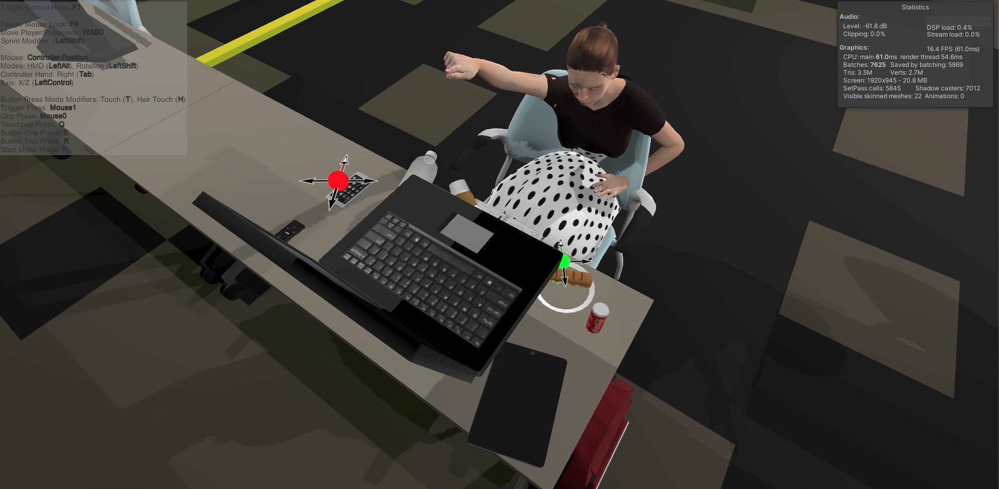
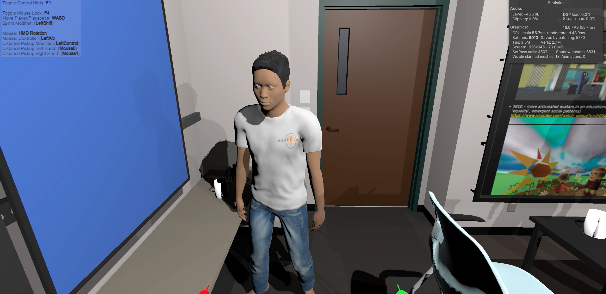
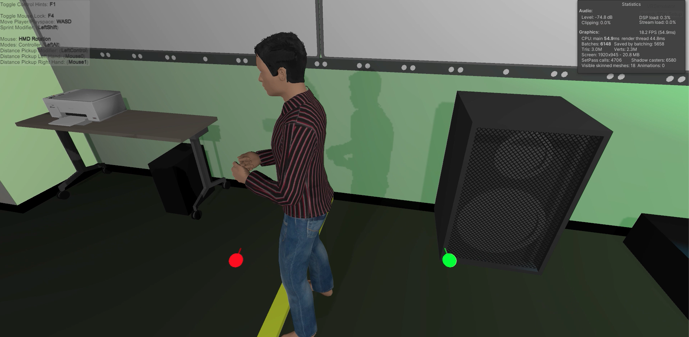
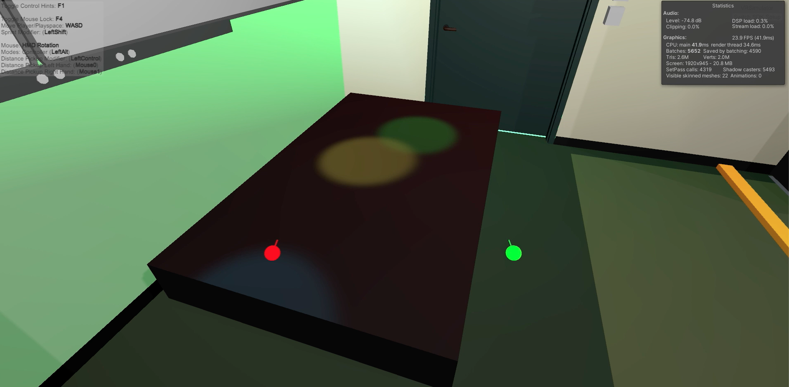
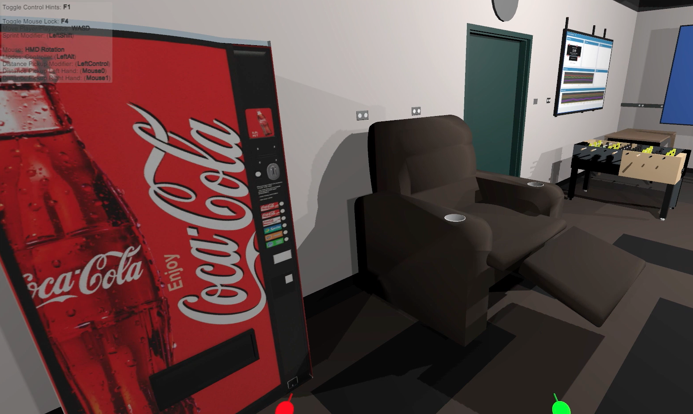
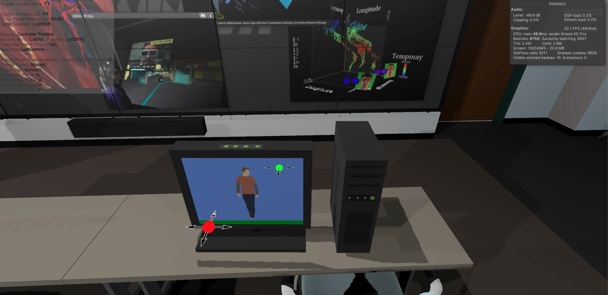
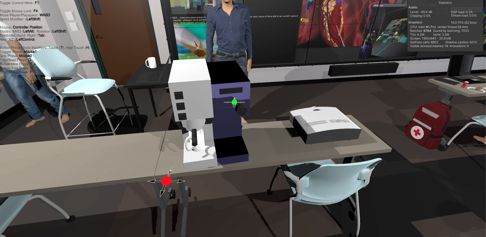
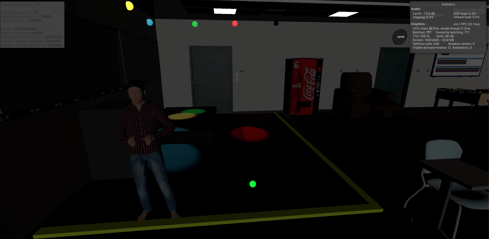
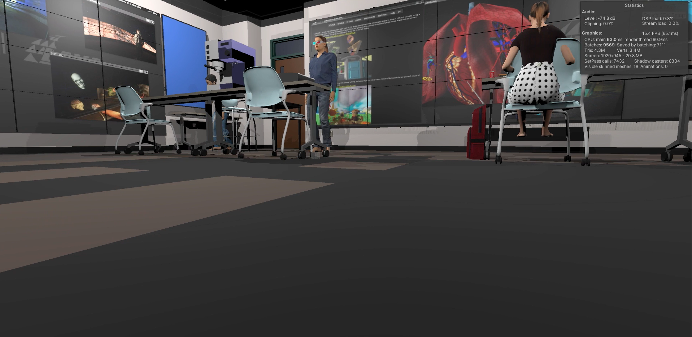

In this project I created a dream classroom in Virtual Reality. Since, this entire semester was work/study-from-home, I surely missed this.
Things you can do with it:My desk in the scene. It has 11 small objects. A laptop, an ipad, a plate, a Sandwich, a coke can, a notebook, a pen, a coffee cup, a mobile phone, a water bottle and an ipod.
All small objects can be grabbed and dropped.
All students change their animation and speak something when you get closer.
Large objects - Printer, Speaker. All large objects have colliders and gravity but they can't be grabbed. There are a total of 10 large objects.
Large objects - Dance Floor
Large objects - Vending Machine, Recliner, foosball and a normal table.
Large objects - Desktop computer. When touched, the screen turns on.
Large objects - Espresso machine and projector. When espresso machine is touched, a cup (of coffee) appears.
New lighting scheme - DJ lights
User scaled down, and seeing the scene from that scale.
Interacting, talking to, seeing others in this pandemic era is going to bridge a huge gap of not being able to see others physically. You no longer need to be in the same room to see and meet others. Video calls have already revolutionized the world so much that otherwise would have been tough being an international student in the US with family many timezones away. As this pandemic continues I can see increased used of Virtual Reality and its adoption. It may get very well integrated in the future, just like video calls have.
Imagine if all the Zoom and Microsoft teams calls can be done in the same way but in VR. We don't have to go to office anymore and can still work with our colleagues as though we were sitting next to each other. It's a safe yet makes people feel connected to each other. This can be achieved perfectly with VR since it's so immersive. Collaboration also can be very effective in VR if we have a common whiteboard or TV like in this project.
Not just working and studying, but because of the pandemic travel has been restricted to a great extent as well. Not just during a pandemic, but even normally it's not possible for all people to travel the world. That may be either financial limitations, time limitations or physical and bodily limitations. VR eliminates all of these issues.
There was a project released by Facebook where Facebook executives visited disaster hit places to provide them solace. This can be a great way to help people in their problems, at least emotionally by being there if not anything else.
But there are some cons as well. For this to work properly, it needs to be implemented properly. If we implement an application that does VR but has no physics, it will not be related to the actual world. It needs to have proper physics so that humans feel it to be natural. The application needs to have very high frame rates to not cause sickness, build proper tech to avoid body disorientation and should have no glitches.The experience can be made better by using technologies like Haptic suits, like the bHaptics Tactsuit that I demonstrated. The models also need to improve a bit as the current ones may look like more doll-like and sometimes creepy.
Another problem is what if people stop communicating for real and just rely on Virtual Reality? Though it can be a great facilitator, we see how sometimes technology makes people more disconnected by making them not explore the real world. What if after the pandemic ends, people get too distant? VR headsets also need to become lighter.
If all these issues are fixed, I think it will be a great help for people in the future.